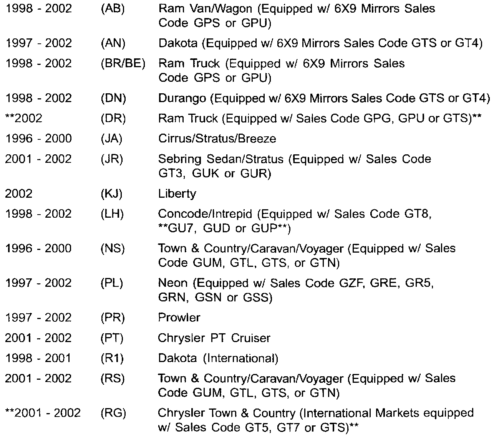
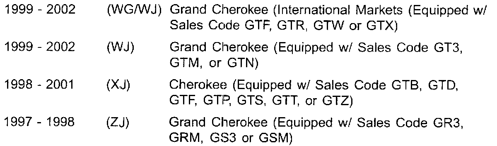
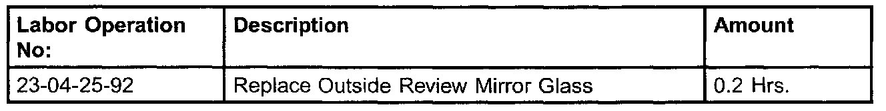
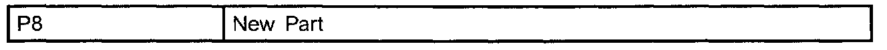

Outside Rearview Mirror - Glass Replacement
NUMBER: 23-015-02GROUP: Body
DATE: Apr. 1, 2002
THIS BULLETIN SUPERSEDES TECHNICAL SERVICE BULLETIN 23-027-01, DATED SEPT. 21, 2001, WHICH SHOULD BE REMOVED FROM YOUR FILES. ALL REVISIONS ARE HIGHLIGHTED WITH **ASTERISKS** AND INCLUDE ADDITIONAL MODELS AND SALES CODES.
SUBJECT:
Outside Rearview Mirror Glass Replacement


MODELS
DISCUSSION:
It is unnecessary to replace the entire outside rearview mirror assembly when the mirror glass is damaged or broken. Replacement mirror glasses are available from MOPAR.
PARTS REQUIRED:
Because of the extremely long list of part numbers involved they are not listed here, please consult the MOPAR parts catalog for the correct part number(s).
REPAIR PROCEDURE:
WARNING:
ALWAYS WEAR EYE AND HAND PROTECTION WHEN SERVICING THE MIRROR ASSEMBLY FAILURE TO OBSERVE THESE WARNINGS MAY RESULT IN PERSONAL INJURY FROM BROKEN GLASS.
NOTE:
SOME REPLACEMENT MIRROR GLASS/HOLDER ASSEMBLIES ARE PACKAGED WITH REMOVAL/INSTALLATION INSTRUCTIONS WHICH SHOULD BE FOLLOWED, BUT IF NO INSTRUCTIONS ARE PACKAGED WITH THE REPLACEMENT GLASS/HOLDER ONE OF THE FOLLOWING PROCEDURES SHOULD BE USED.
PROCEDURE FOR KJ, NS, RS, WG, WJ, XJ, and ZJ
1. Adjust the mirror glass to the full down and centered side to side position.
2. Position a wide leverage device (trim stick) between the bottom edge of the glass/holder assembly and the inside of the mirror housing/shell.
3. Firmly apply upward pressure to the leverage device/mirror glass until the glass assembly disengages from the adapter plate in the mirror housing/shell.
4. Disconnect all wire terminals from the glass/holder if equipped.
5. Connect all wire terminals to the replacement glass/holder if equipped.
6. Locate the four snap tab cavities on the back side of the glass/holder and align them with the four snap tabs found on the front of the adapter plate.
7. Loosely position the tabs to align and position the wide leverage device between the top edge of the glass/holder assembly and the inside of the mirror housing/shell.
8. Firmly apply downward pressure to the leverage device/mirror glass until the glass assembly ergages from the adapter plate in the mirror housing/shell. Correct assembly will result with a firm click. The glass should exhibit even gaps to the housing/shell when complete.
9. Pull lightly on the corners of the glass/holder to ensure all four tabs are engaged and that there is no free play.
PROCEDURE FOR AB, AN, BR/BE, DN, JA, JR, LH, PR, PT AND R1
1. Carefully pull/pry the broken mirror glass holder from the mirror assembly.
NOTE:
REPLACE THE MIRROR ASSEMBLY IF ANY DAMAGE IS IDENTIFIED ON THE MIRROR MOTOR HOUSING.
2. If equipped, disconnect the heated mirror wires from the terminals on the mirror glass/holder.
CAUTION:
IT IS IMPORTANT TO MAKE SURE THE MOTOR IS SQUARE TO THE GLASS HOLDER PRIOR TO GLASS/HOLDER ATTACHMENT, OTHERWISE THE GLASS/HOLDER COULD BE INSTALLED INCORRECTLY CAUSING POOR RETENTION.
3. Connect the heated mirror wires to the terminals on the back of the mirror glass, if equipped. Then, position the new mirror glass/holder to the mirror housing assembly.
NOTE:
POSITION THE MIRROR GLASS/HOLDER SO THAT THE MOISTURE DRAIN HOLE ON THE MIRROR GLASS/HOLDER ASSEMBLY, IF SO EQUIPPED, IS FACING DOWNWARD.
4. Align the mirror glass/holder to the mirror motor housing.
NOTE:
ENSURE THAT THE PROTECTIVE RUBBER COVER OF THE MIRROR MOTOR HOUSING, IF SO EQUIPPED, IS POSITIONED CORRECTLY AROUND THE BOTTOM OF THE FINGERS AREA.
5. Using one hand, firmly press the mirror glass/holder assembly into place while at the same time supporting the housing assembly from the backside with the other hand.
NOTE:
PRESSURE MUST BE APPLIED EQUALLY OVER THE CENTER PORTION OF THE MIRROR TO ENGAGE THE MIRROR GLASS/HOLDER TO THE HOUSING ASSEMBLY. ONE OR MORE CLICKS MAY BE HEARD WHEN ENGAGEMENT TAKES PLACE. IT IS IMPORTANT TO MAKE SURE THAT THE GLASS/HOLDER IS FULLY ENGAGED. PERFORM A FINAL RETENTION CHECK BY PUSHING ON THE MIRROR WITH YOUR HAND ONE ADDITIONAL TIME PRIOR TO RETURNING THE VEHICLE TO THE CUSTOMER.
6. Verify proper mirror adjustment functions and retention of the mirror glass/holder assembly by gently pulling outward on the mirror glass/holder.
7. Repeat Steps 4 through 6 if the mirror glass/holder detaches from the mirror motor housing.
PROCEDURE FOR DR
1. Installation instructions are packaged with the replacement glass.
PROCEDURE FOR PL
1. Push the glass holder fully inboard. Then place fingers under the outboard portion of the glass/holder and pull outboard and rearward until this portion of the glass/holder is disengaged, then push inboard until fully disengaged. Remove the glass/holder from the mirror assembly.
NOTE:
REPLACE THE MIRROR ASSEMBLY IF ANY DAMAGE IS IDENTIFIED ON THE MIRROR MOTOR HOUSING.
2. If equipped, disconnect the heated mirror wires from the terminals on the mirror glass/holder.
CAUTION:
IT IS IMPORTANT TO MAKE SURE THE MOTOR IS SQUARE TO THE GLASS HOLDER PRIOR TO GLASS/HOLDER ATTACHMENT, OTHERWISE THE GLASS/HOLDER COULD BE INSTALLED INCORRECTLY CAUSING POOR RETENTION.
3. Connect the heated mirror wires to the terminals on the back of the mirror glass, if equipped. Then, position the new mirror glass/holder to the mirror housing assembly.
NOTE:
POSITION THE MIRROR GLASS/HOLDER SO THAT THE MOISTURE DRAIN HOLE ON THE MIRROR GLASS/HOLDER ASSEMBLY, IF SO EQUIPPED, IS FACING DOWNWARD.
4. Align the mirror glass/holder to the mirror motor housing.
NOTE:
ENSURE THAT THE PROTECTIVE RUBBER COVER OF THE MIRROR MOTOR HOUSING, IF SO EQUIPPED, IS POSITIONED CORRECTLY AROUND THE BOTTOM OF THE FINGERS AREA.
5. Install the replacement glass/holder in the reverse order followed in step 1.
NOTE:
PRESSURE MUST BE APPLIED EQUALLY OVER THE CENTER PORTION OF THE MIRROR TO ENGAGE THE MIRROR GLASS/HOLDER TO THE HOUSING ASSEMBLY. ONE OR MORE CLICKS MAY BE HEARD WHEN ENGAGEMENT TAKES PLACE. IT IS IMPORTANT TO MAKE SURE THAT THE GLASS/HOLDER IS FULLY ENGAGED. PERFORM A FINAL RETENTION CHECK BY PUSHING ON THE MIRROR WITH YOUR HAND ONE ADDITIONAL TIME PRIOR TO RETURNING THE VEHICLE TO THE CUSTOMER.
6. Verify proper mirror adjustment functions and retention of the mirror glass/holder assembly by gently pulling outward on the mirror glass/holder.
7. Repeat Steps 4 through 6 if the mirror glass/holder detaches from the mirror motor housing.
POLICY:
Reimbursable within the provisions of the warranty.

TIME ALLOWANCE

FAILURE CODE